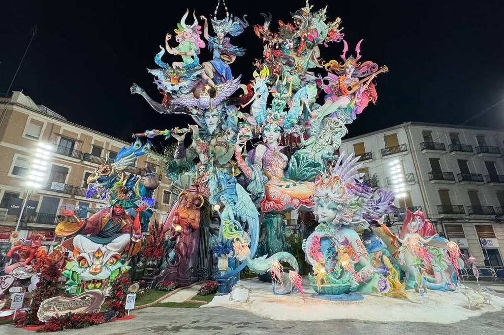
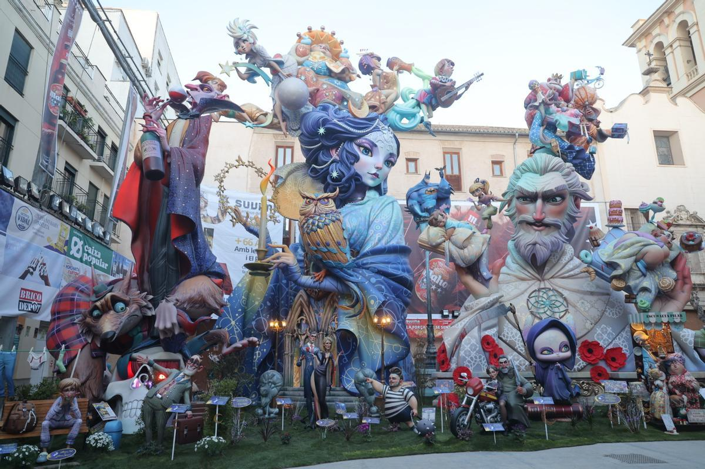
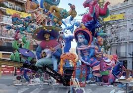
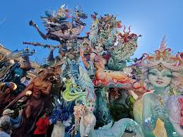

Special Section Monuments 2026

The Most Expensive
Located near the train station, this Falla usually has the highest budget in Valencia (often exceeding €250,000). It is famous for its classic elegance and massive scale.

The Vertical Giant
This is the "impossible" Falla. It is built in a very narrow square, making it look incredibly tall. It is known for risky structures that seem to defy gravity.

Ruzafa Lights & Art
Located in the trendy Ruzafa neighborhood. This Falla is famous for combining a top-tier monument with the most spectacular street light show in Europe.

The Detail Masters
Recent winners of the first prize. They are masters of "Ninots" (the individual figures). Their satire is sharp and their colors are incredibly vibrant.